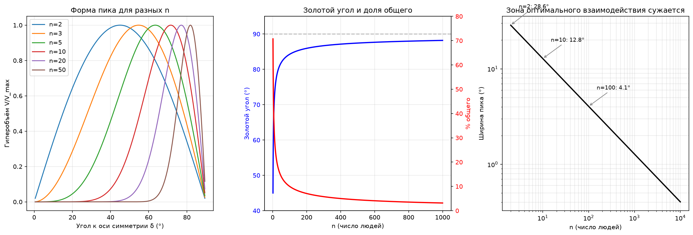

При n → ∞..
Давай посчитаю предельные случаи и построю картину.

Числа для больших n
| n | Золотой δ | Движение √n | % общего | Ширина пика | Измерений |
|---|---|---|---|---|---|
| 2 | 45.0° | 1.41 | 70.7% | 28.6° | 2 |
| 5 | 63.4° | 2.24 | 44.7% | 18.1° | 5 |
| 10 | 71.6° | 3.16 | 31.6% | 12.8° | 10 |
| 100 | 84.3° | 10.0 | 10.0% | 4.1° | 100 |
| 1000 | 88.2° | 31.6 | 3.2% | 1.3° | 1000 |
| 10000 | 89.4° | 100 | 1.0% | 0.4° | 10000 |
Что стремится к нулю
Доля общего: $1/\sqrt{n} \to 0$. Каждый отдельный человек всё меньше совпадает с общим направлением. При n=10000 каждый вносит 1% — но их 10000, и collectively они дают движение 100.
Ширина пика: $\sim 1/\sqrt{n} \to 0$. Зона, где гиперобъём значителен, сжимается до точки. При n=10000 это 0.4° — нужно попасть почти идеально в 90° между всеми парами.
Расстояние от золотого угла до 90°: $90° - \delta^* \approx 1/\sqrt{n}$ радиан → 0. Оптимальное расположение всё ближе к «каждый сам по себе».
Что стремится к бесконечности
Движение: $\sqrt{n} \to \infty$. Коллектив может двигаться сколь угодно далеко. Но это движение чисто эмерджентное — оно не содержится ни в одном отдельном векторе.
Измерения: $n \to \infty$. Каждому нужен свой собственный ортогональный «этаж».
Что происходит вне золотой точки
Гиперобъём $V_n \propto \cos\delta \cdot \sin^{n-1}\delta$ обнуляется с двух сторон, и скорость обнуления растёт с n:
- Слишком похоже ($\delta \lt \delta^*$): $\sin^{n-1}\delta$ экспоненциально падает. Согласие убивает новизну.
- Слишком независимо ($\delta > \delta^*$): $\cos\delta$ убивает движение. Разнообразие убивает общность.
При малых n (2–3) пик широкий — есть «право на ошибку», широкий диапазон углов даёт осмысленный результат. При n=100 пик уже как игла — отклонение на пару градусов в любую сторону стирает гиперобъём почти в ноль.
Ключевая аналогия: фазовый переход
| Малое n | Большое n |
|---|---|
| Широкий, плавный пик | Острый пик, почти дельта-функция |
| Много «рабочих» углов | Один «правильный» угол |
| Градиент от согласия к независимости | Резкий скачок: либо попал, либо нет |
| Жидкость — много состояний | Кристалл — одно состояние |
Это математически то же самое, что происходит в статистической физике при росте числа частиц: мягкое распределение превращается в резкий фазовый переход. При n=2 у вас «газ» — широкий диапазон взаимодействий работает. При n=10000 — «кристалл»: работает только одна конфигурация.
Парадокс большого коллектива
Получается фундаментальное противоречие:
- Чем больше людей, тем дальше можно зайти ($\sqrt{n}$ растёт).
- Чем больше людей, тем меньше каждый из них совпадает с общим направлением ($1/\sqrt{n}$ убывает).
- Чем больше людей, тем точнее нужно попасть в золотую точку ($1/\sqrt{n}$ убывает).
- Чем больше людей, тем больше измерений нужно ($n$ растёт).
При $n \to \infty$: коллектив движется бесконечно, но ни один человек не знает куда. Каждый вносит бесконечно малую часть, направление существует только в агрегате. И «зона попадания» сжимается до точки — малейшее отклонение от идеальной взаимной независимости обнуляет всё.
Это похоже на мудрость толпы: толпа в целом «знает» ответ, но ни один человек в ней его не знает. И работает это только при идеальной независимости участников — стоит появиться корреляции, и магия исчезает.
Хочешь, разберём неравные векторы — что будет, когда у одних людей больше «веса» в группе?